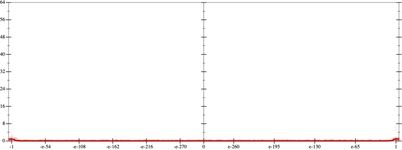
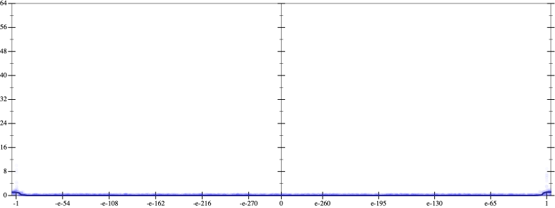
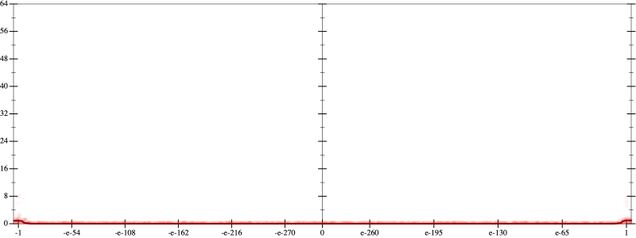
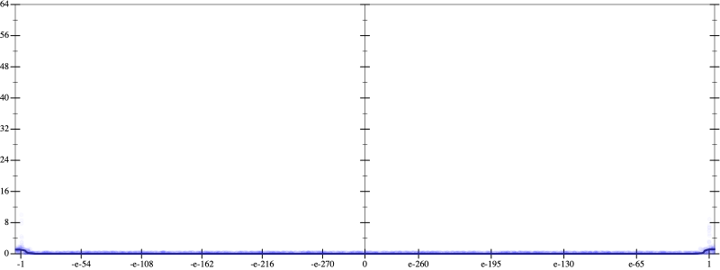

Initial program 0.0
\[\left(\left(\left(2.460938 \cdot x + -36.09375 \cdot \left(\left(x \cdot x\right) \cdot x\right)\right) + 140.765625 \cdot \left(\left(\left(\left(x \cdot x\right) \cdot x\right) \cdot x\right) \cdot x\right)\right) + -201.09375 \cdot \left(\left(\left(\left(\left(\left(x \cdot x\right) \cdot x\right) \cdot x\right) \cdot x\right) \cdot x\right) \cdot x\right)\right) + 94.960938 \cdot \left(\left(\left(\left(\left(\left(\left(\left(x \cdot x\right) \cdot x\right) \cdot x\right) \cdot x\right) \cdot x\right) \cdot x\right) \cdot x\right) \cdot x\right)\]
- Using strategy
rm Applied add-cube-cbrt0.0
\[\leadsto \left(\left(\left(2.460938 \cdot x + \color{blue}{\left(\sqrt[3]{-36.09375 \cdot \left(\left(x \cdot x\right) \cdot x\right)} \cdot \sqrt[3]{-36.09375 \cdot \left(\left(x \cdot x\right) \cdot x\right)}\right) \cdot \sqrt[3]{-36.09375 \cdot \left(\left(x \cdot x\right) \cdot x\right)}}\right) + 140.765625 \cdot \left(\left(\left(\left(x \cdot x\right) \cdot x\right) \cdot x\right) \cdot x\right)\right) + -201.09375 \cdot \left(\left(\left(\left(\left(\left(x \cdot x\right) \cdot x\right) \cdot x\right) \cdot x\right) \cdot x\right) \cdot x\right)\right) + 94.960938 \cdot \left(\left(\left(\left(\left(\left(\left(\left(x \cdot x\right) \cdot x\right) \cdot x\right) \cdot x\right) \cdot x\right) \cdot x\right) \cdot x\right) \cdot x\right)\]
Taylor expanded around 0 62.9
\[\leadsto \left(\left(\left(2.460938 \cdot x + \left(\color{blue}{e^{\frac{1}{3} \cdot \left(3 \cdot \log x + \log \left(-36.09375\right)\right)}} \cdot \sqrt[3]{-36.09375 \cdot \left(\left(x \cdot x\right) \cdot x\right)}\right) \cdot \sqrt[3]{-36.09375 \cdot \left(\left(x \cdot x\right) \cdot x\right)}\right) + 140.765625 \cdot \left(\left(\left(\left(x \cdot x\right) \cdot x\right) \cdot x\right) \cdot x\right)\right) + -201.09375 \cdot \left(\left(\left(\left(\left(\left(x \cdot x\right) \cdot x\right) \cdot x\right) \cdot x\right) \cdot x\right) \cdot x\right)\right) + 94.960938 \cdot \left(\left(\left(\left(\left(\left(\left(\left(x \cdot x\right) \cdot x\right) \cdot x\right) \cdot x\right) \cdot x\right) \cdot x\right) \cdot x\right) \cdot x\right)\]
Applied simplify0.0
\[\leadsto \color{blue}{\left(\left({\left(x \cdot x\right)}^{3} \cdot x\right) \cdot \left(x \cdot \left(94.960938 \cdot x\right) + -201.09375\right) + \left(\left(\left(140.765625 \cdot x\right) \cdot \left(x \cdot x\right)\right) \cdot \left(x \cdot x\right) + 2.460938 \cdot x\right)\right) + \left(\sqrt[3]{\left(-36.09375 \cdot x\right) \cdot \left(x \cdot x\right)} \cdot \sqrt[3]{\left(-36.09375 \cdot x\right) \cdot \left(x \cdot x\right)}\right) \cdot \sqrt[3]{\left(-36.09375\right) \cdot {x}^{3}}}\]
- Using strategy
rm Applied cbrt-unprod0.0
\[\leadsto \left(\left({\left(x \cdot x\right)}^{3} \cdot x\right) \cdot \left(x \cdot \left(94.960938 \cdot x\right) + -201.09375\right) + \left(\left(\left(140.765625 \cdot x\right) \cdot \left(x \cdot x\right)\right) \cdot \left(x \cdot x\right) + 2.460938 \cdot x\right)\right) + \color{blue}{\sqrt[3]{\left(\left(-36.09375 \cdot x\right) \cdot \left(x \cdot x\right)\right) \cdot \left(\left(-36.09375 \cdot x\right) \cdot \left(x \cdot x\right)\right)}} \cdot \sqrt[3]{\left(-36.09375\right) \cdot {x}^{3}}\]
 
